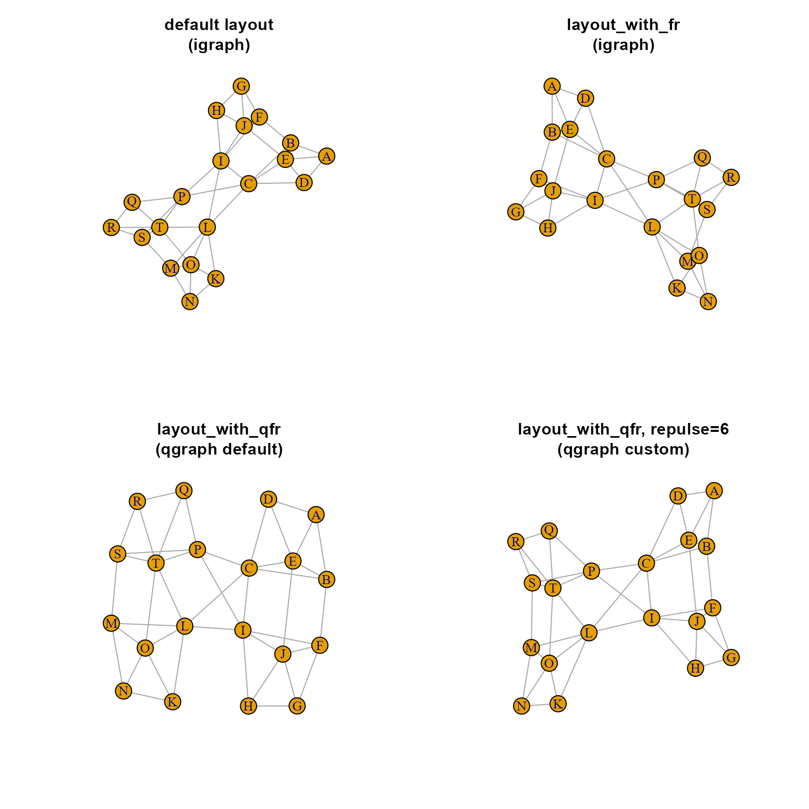

igraph layout using qgraph Fruchterman-Reingold
layout_with_qfr( g, repulse = 3.5, area = 8 * (vcount(g)^2), repulse.rad = (vcount(g)^repulse), constraints = NULL, seed = 123, weights = NULL, niter = NULL, max.delta = NULL, cool.exp = NULL, init = NULL, groups = NULL, rotation = NULL, layout.control = 0.5, round = TRUE, digits = NULL, verbose = FALSE, ... )
| g | igraph object |
|---|---|
| repulse | exponent power used to scale the radius effect around each vertex. The default is slightly higher than the cube of the number of vertices, but as the number of vertices increases, values from 3.5 to 4 and higher are more effective for layout. |
| area | The area of the plot, default is the square of the number of
vertices times 8. Changes to plot area will also affect values of
|
| repulse.rad | Repulse radius, defaults to the the number of
vertices raised to the |
| constraints | optional two-column matrix with the coordinates of nodes which should not be modified, and NA values for nodes where the position can be modified. |
| ... | other arguments are sent to
|
two-column numeric matrix with coordinates for each vertex.
This function provides Fruchterman-Reingold layout for an igraph object using the implementation from the qgraph package, which provides important configuration options deprecated in the igraph implementation. Notably, the repulse.rad parameter is helpful in adjusting the relative spacing of vertices, where higher values cause tighter packing of vertices, and lower values allows greater spacing between vertices.
qgraph::qgraph.layout.fruchtermanreingold()
Other jam igraph functions:
cnet2df(),
cnet2im(),
cnetplotJam(),
cnetplot_internalJam(),
drawEllipse(),
enrichMapJam(),
fixSetLabels(),
igraph2pieGraph(),
jam_igraph(),
layout_with_qfrf(),
memIM2cnet(),
mem_multienrichplot(),
rectifyPiegraph(),
relayout_with_qfr(),
removeIgraphBlanks(),
removeIgraphSinglets(),
reorderIgraphNodes(),
shape.coloredrectangle.plot(),
shape.ellipse.plot(),
spread_igraph_labels(),
subgraph_jam(),
subsetCnetIgraph(),
subset_igraph_components(),
with_qfr()
if (suppressPackageStartupMessages(require(igraph))) { g <- make_graph( ~ A-B-C-D-A, E-A:B:C:D, F-G-H-I-F, J-F:G:H:I, K-L-M-N-K, O-K:L:M:N, P-Q-R-S-P, T-P:Q:R:S, B-F, E-J, C-I, L-T, O-T, M-S, C-P, C-L, I-L, I-P) par("mfrow"=c(2,2)); plot(g, main="default layout\n(igraph)"); plot(g, main="layout_with_fr\n(igraph)", layout=layout_with_fr); plot(g, main="layout_with_qfr\n(qgraph default)", layout=layout_with_qfr); plot(g, main="layout_with_qfr, repulse=6\n(qgraph custom)", layout=function(g)layout_with_qfr(g, repulse=6)); }#> #> #> #>